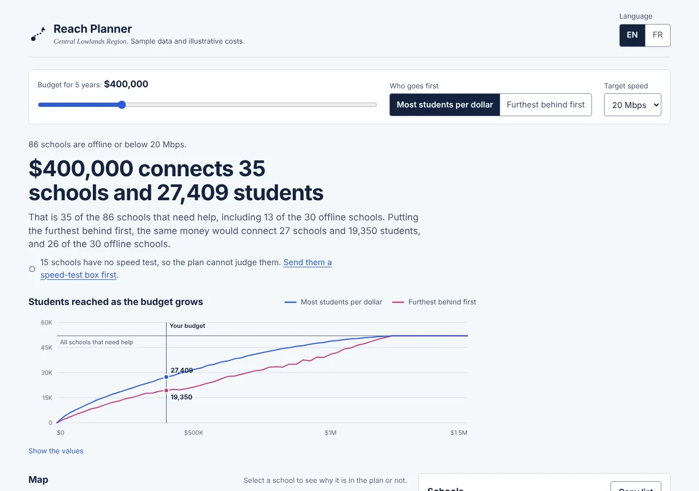
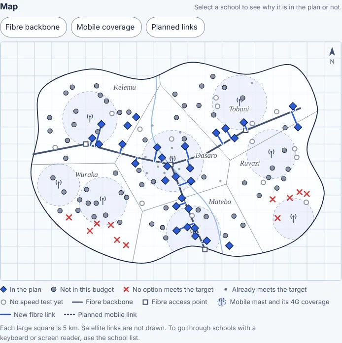
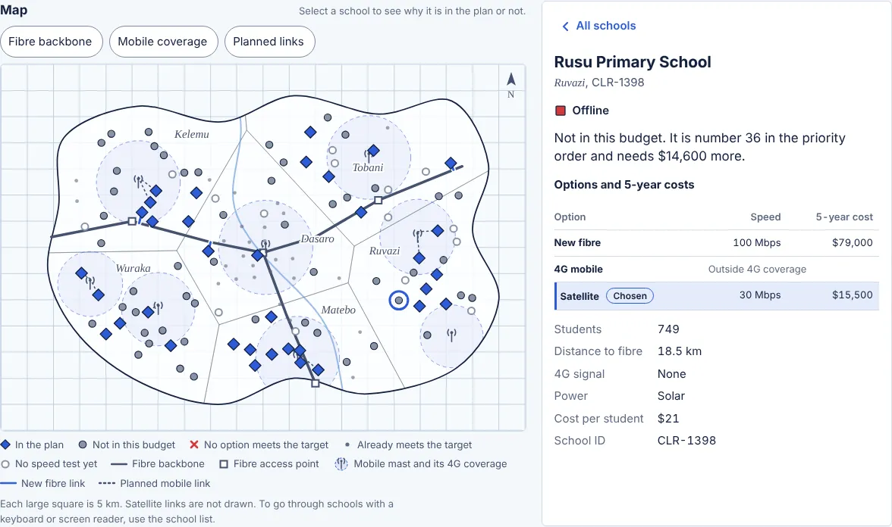
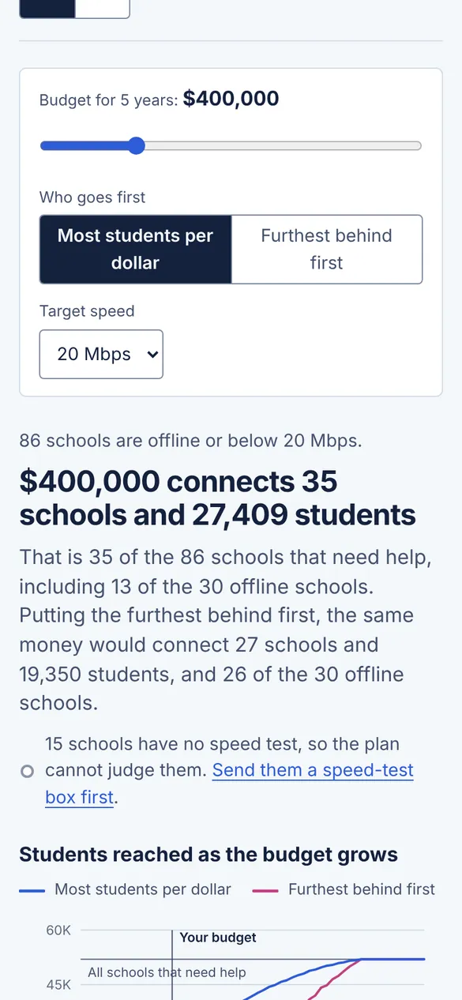

Project 3 · Planning map and decision support
Reach Planner
A planning tool that shows which schools a budget can connect next, by fibre, mobile or satellite, and what each way of choosing gives up.
- Role
- Design and front end, on my own
- Data
- The sample schools from Classroom Signal; illustrative costs
- Languages
- English and French
About the research and the numbers. The users and their questions below are my assumptions, not research findings. The fibre route, the mobile masts and every cost are illustrative, not real prices. The validation plan at the end is how I would check both.

1The problem
Classroom Signal shows that 86 of the 128 sample schools are offline or below the target speed. The next question for a ministry is harder: with the money we have, which schools do we fix first, and how?
The answer depends on geography (how far a school is from the fibre network, whether it has 4G coverage), on cost over several years, and on fairness: the cheapest schools to connect are rarely the ones furthest behind. A spreadsheet hides the geography, and a desktop GIS tool is heavy and needs training. The people who decide need something in between that they can open on a laptop over a slow connection and explain to a minister.
Goal: in under a minute, a planning officer can see what a budget buys, why each school is in the plan or not, and what a different way of choosing would change.
2Who it is for
Three groups, each with one question the page must answer. These are assumptions to be tested, not findings. Hypothetical
| Who | Their question | Where the page answers it |
|---|---|---|
| Planning officer, ministry of education | “What does this budget buy, and can I defend the list?” | The opening sentence, the priority rule, and each school’s options and costs. |
| Regulator or fund manager | “Are the rules for choosing schools fair and transparent?” | The comparison sentence, the budget curve and the editable cost assumptions. |
| Internet provider | “What exactly would we be asked to build, and where?” | Work packages grouped by district and technology, with kilometres of new fibre, copied as CSV. |
3Making the trade-off visible
A planning tool that silently picks “the best” schools hides a political choice. Reach Planner offers two rules and always states what the other one would do, so the decision stays with people.
Most students per dollar
35 schools, 27,409 students
Only 13 of the 30 offline schools are included: cheap 4G upgrades near masts come first.
Furthest behind first
27 schools, 19,350 students
26 of the 30 offline schools are included, but 8,000 fewer students are reached.
Both at a budget of $400,000 over 5 years, with a 20 Mbps target. The chart in the planner shows the same comparison at every budget: the two lines meet at about $1.25 million, when all 86 schools and their 51,989 students are connected.
4How the plan is worked out
- Which schools need help. Schools that are offline or below the target. Schools with no speed test are left out, and the page links to Signal Setup, because planning on guesses would be worse.
- What each school could get. On the map, the planner measures the distance to the nearest point of the fibre backbone and checks whether the school is inside a 4G mast’s coverage. The estimated 4G speed falls with distance from the mast. Satellite is available everywhere. A school without power gets a solar kit added to every option.
- The cheapest option that meets the target. Each option gets a 5-year cost: installation plus running costs. Options that are too slow are shown, but never chosen.
- Priority order. Either by students per dollar, or offline schools first and then the slowest.
- Fill the budget. Take schools in order, skipping any that no longer fit the money left.
The last step is a simple rule, not the mathematically best selection (that would be a “knapsack” optimisation). I chose it because an officer can explain it in one sentence: “we went down the list and skipped what we could not afford”. Each school’s detail view says exactly that, including how much more money it would need.


5Design decisions
| Decision | Why |
|---|---|
| The page opens with one sentence that changes with the settings | Like Classroom Signal, it answers the main question before any chart, and a screen reader hears it first. Changes are announced through a live region. |
| All settings sit in one row above the results | Budget, priority rule and target change everything below them, so the numbers on the page always agree. |
| The budget curve has two lines on one axis, with a table version | It shows where extra money stops buying much, and where the two rules meet. The two line colours were checked for colour-blind separation in both themes, and the legend and value labels mean colour is never the only key. |
| The plan state of a school has its own shapes: diamond, grey dot, red cross, ring | They do not reuse Classroom Signal’s status shapes, which mean something else, and each shape comes with words in the legend. |
| The map draws the backbone, mast coverage and every planned link | Distance is the main reason a school costs what it does; seeing the fibre branch from the backbone makes the cost obvious. Layers can be switched off to reduce clutter. |
| The school list is the keyboard and screen-reader path | Same as Classroom Signal: the list holds everything the map shows, in priority order, filtered with chips. |
| Costs are editable and labelled as illustrative | Prices differ by country and change every year. Regulators can test what happens if satellite gets cheaper or the plan counts 10 years instead of 5. |
| Work packages and “Copy” buttons produce CSV | Providers and finance teams work in spreadsheets; the page fits into that instead of replacing it. |
| One file of about 79 KB (25 KB compressed), no map tiles | The map is SVG drawn from the same coordinates as Classroom Signal, so the page opens on a slow connection and works offline once loaded. |

6Accessibility (WCAG 2.2 AA)
- The plan is described in words first; the chart has a table, and the map has a written summary and a full list.
- Plan states and statuses use shape, colour and words, never colour alone (1.4.1).
- The budget slider is a native range input, so it works with arrow keys and screen readers, and shows its value as text.
- Changes to the plan are announced once the slider stops moving, so a screen reader is not flooded.
- Cost fields have labels, help text and error messages linked to them (3.3.1, 3.3.3).
- The chart is drawn at the real screen width, so its labels stay at their real size on a phone.
Audit, 11 October 2026
I ran axe-core 4.14 (the WCAG 2.0 to 2.2 A and AA rules, plus best practices) on 30 states of the planner. They cover light and dark themes, phone and desktop widths, English and French, both priority rules, a school in the plan, a school outside the budget, a 50 Mbps target with the “No option” list, an invalid cost and the map view on phones. The planner had 0 violations. On this case study, axe found one problem at phone width: a table was slightly too wide, which made a scrolling area that keyboard users could not reach. The table now fits, and every state passes.
Looking at the screens myself, I found two problems that automated tools did not flag. The chart was drawn at desktop width and scaled down, so its labels shrank to about 5 px on a phone; it is now drawn at the real width. Number fields had no shared style and were too small to tap; they now use the design system’s field style, which every page shares.
Lighthouse 12.8 (phone emulation with a slow 4G connection and a 4× slower processor) scores the planner 99 for performance and 100 for accessibility, best practices and SEO, with the largest content drawn in 1.5 seconds.
By hand, I checked the keyboard path: the budget slider responds to the arrow keys, Home and End, and the new result is announced half a second after it stops moving. The skip link, the school list, the details and Escape all work as they do in Classroom Signal. I also ran the WCAG 1.4.12 text-spacing test at 375 px and checked reflow at 320 px. Not yet done: testing with screen readers and with the people who would use the planner.
7Validation plan Planned, not yet run
Nothing below has happened yet.
- Sessions with three or four planners or regulators, 30 minutes each, remote with screen sharing, on their own laptop and connection. Tasks: find how many students $500,000 reaches; explain why one named school is not in the plan; prepare the package list for one district. Success: each task done without help, and the explanation matches the page.
- A check of the cost model with a network engineer: whether straight-line distance to the backbone is close enough, or fibre must follow roads, and which running costs are missing.
- A comparison with an optimal selection, to measure how many students the simple “go down the list” rule loses at each budget, so planners can decide whether explainability is worth it.
8What I would do next
- Route fibre along roads from open map data instead of straight lines, and use published mobile coverage where it exists.
- Plan in phases: what to connect this year and next, with running costs added each year.
- Export the plan as GeoJSON for teams that use GIS tools.
- Add the fifth status suggested by Signal Setup: schools that report having no connection.
9How it is built
Plain HTML, CSS and JavaScript in one file, with no framework or build step. The schools come from the same seeded generator as Classroom Signal, copied into the page, so both projects show the same region. The distances are computed in the browser, as the shortest distance from each school to each segment of the backbone. Colours, type and controls come from the shared design system, which gained two chart-series colours for this project.
Built with an AI coding assistant.